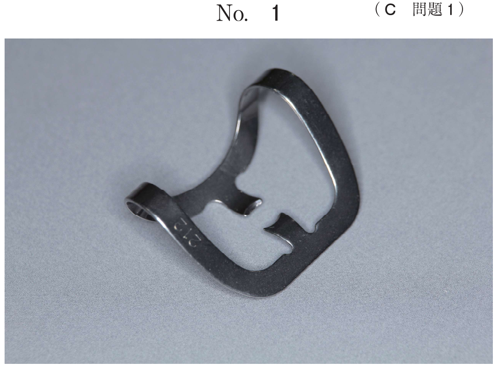

乳歯と永久歯の形態的差異、癒合歯の好発部位（下顎乳側切歯と乳犬歯）、乳臼歯の咬頭数・歯根数を押さえる。
| 歯種 | 咬頭数 | 歯根数 | 根管数 | |
|---|---|---|---|---|
| 上顎 | 第一乳臼歯（D） | 2 | 3 | 3 |
| 第二乳臼歯（E） | 4 | 3 | 3 | |
| 下顎 | 第一乳臼歯（D） | 4 | 2 | 3 |
| 第二乳臼歯（E） | 5 | 2 | 3 |
下顎第二乳臼歯は下顎第一大臼歯に類似（5咬頭）
癒合歯は、2つの歯胚が象牙質部分を含めて結合したもの。乳歯での発現頻度は1〜5%（日本人は3〜4%と高い）。
| 部位 | 頻度 |
|---|---|
| 下顎乳側切歯と乳犬歯（B-C） | 最多 |
| 下顎乳中切歯と乳側切歯（A-B） | 2番目 |
| 上顎乳中切歯と乳側切歯（A-B） | 3番目 |
歯の形態異常と好発部位の組合せで正しいのはどれか。1つ選べ。
【解説】a: 歯内歯は上顎側切歯に好発。b: 癒合歯は下顎乳側切歯と乳犬歯に最多 ✓。c: タウロドントは下顎第二乳臼歯に好発するが、本問では正解ではない（選択肢bが唯一の正解）。d: Carabelli結節は上顎大臼歯に好発。e: プロトスタイリッドは下顎大臼歯に好発。
口腔内写真を別に示す。矢印で示すのはどれか。1つ選べ。

【解説】下顎大臼歯の近心頬面に出現する結節であり、プロトスタイリッドである。原錐茎状突起ともいう。Carabelli結節は上顎大臼歯の近心舌面に出現する。